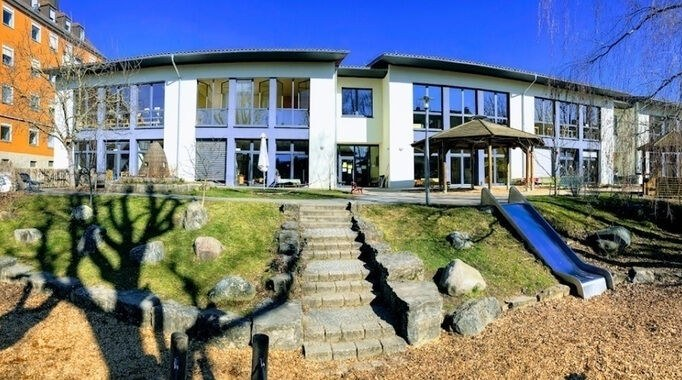
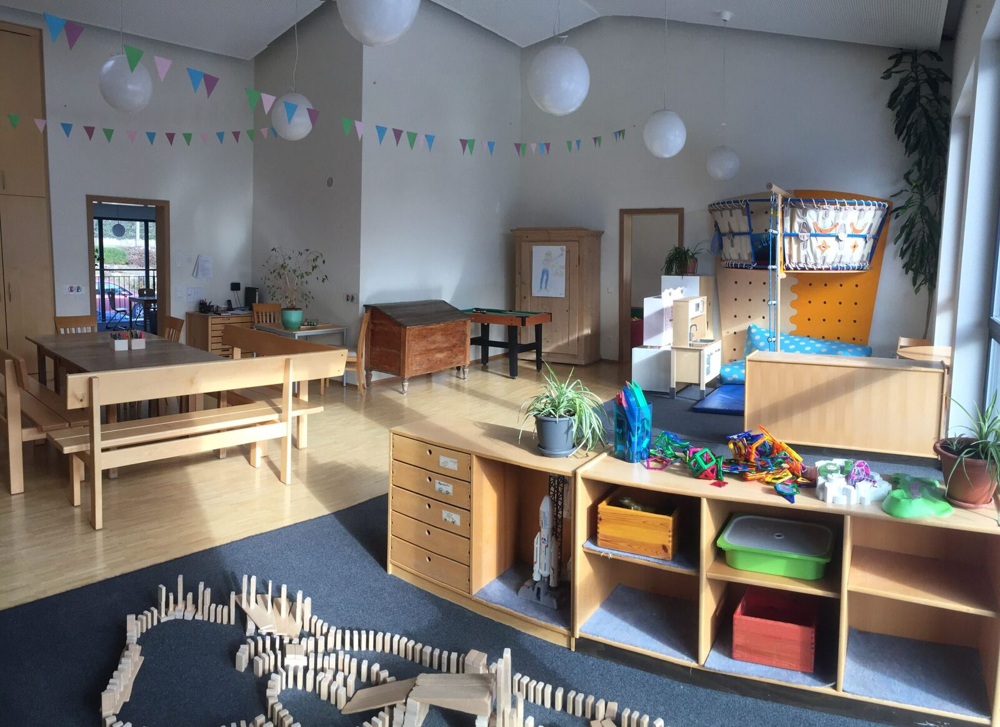
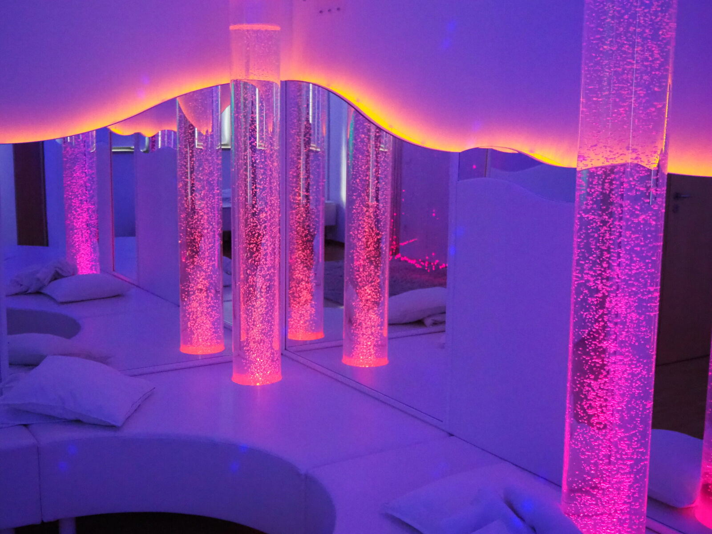

ab 11 Monaten
Kinderkrippe
Sonnen- und Sternengruppe: liebevolle Betreuung für die Kleinsten, bis zum August des Jahres, in dem sie 3 werden.
Zur KinderkrippeKath. Kinder- und Jugendhort Grombühl e. V. · Würzburg
Kinderkrippe, Kindergarten und Kinderhort unter einem Dach. Ihr Kind kann bei uns bleiben, von der ersten Eingewöhnung bis weit in die Schulzeit.

Mit Krippe, Kindergarten und Hort unter einem Dach gibt es ein einheitliches Konzept und einen nahtlosen Wechsel.
Sonnen- und Sternengruppe: liebevolle Betreuung für die Kleinsten, bis zum August des Jahres, in dem sie 3 werden.
Zur Kinderkrippe
Bären-, Bienen- und Spatzengruppe: Projektarbeit, Englisch, Vorkurs Deutsch und viel Freispiel im großen Garten.
Zum Kindergarten
Für alle Schulformen, mit begleiteten und korrigierten Hausaufgaben, Freitagsausflügen und Ferienbetreuung.
Zum KinderhortWeil Qualität zählt. Vielfalt und Individualität sind uns wichtig, und das leben wir jeden Tag in unserer Pädagogik.
Drei Schritte, und wir begleiten Sie bei jedem.
Schreiben Sie uns, ab wann Sie einen Platz suchen. Die vorbereitete E-Mail enthält alle Angaben, die wir brauchen.
Gern zeigen wir Ihnen unser Haus und beantworten Ihre Fragen. Nennen Sie uns einfach Tage, die Ihnen passen.
Die Eingewöhnung planen wir gemeinsam mit Ihnen, ganz nach den Bedürfnissen Ihres Kindes.
Viel Raum zum Spielen, Lernen und Entspannen, mitten in der Stadt.

Wasserbett, Lichtwasserfall und Wassersäulen: ein Ort für Ruhe und Traumreisen.

Zwei Köchinnen kochen täglich frisch und mit regionalen Zutaten.

Ich freue mich sehr, dass Sie sich für unsere Kita interessieren. Wir wollen Ihnen eine gute erste Orientierung geben und weiterhelfen, wenn Sie nach einer passenden Kita suchen.
Petra Lachnit
Einrichtungsleitung
Nein. Wir sind eine katholische Einrichtung und feiern die Feste des Kirchenjahres, sind aber weltoffen für alle Religionen und Kulturen.
In der Kinderkrippe etwa vier Wochen, gemeinsam mit Ihnen geplant. Im Kindergarten verläuft sie für jedes Kind unterschiedlich.
Ja. In allen Bereichen haben wir an höchstens 30 gleichen Tagen im Jahr geschlossen.
In der Kinderkrippe ja: Windeln, Feuchttücher und ggf. Wundschutzcreme, damit jedes Kind mit seinen eigenen Produkten gewickelt wird.
Nein. Braucht Ihr Kind noch eine Windel, unterstützen wir es auf dem Weg zum Sauberwerden.
Unsere hauseigene Küche. Zwei Köchinnen kochen jeden Tag frisch.
Sie haben Fragen zu Krippe, Kindergarten oder Hort? Schreiben Sie uns oder rufen Sie an.